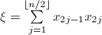
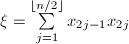
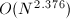
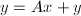
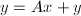

在有关矩阵的计算中,矩阵乘法具有基础性的意义.对于 阶矩阵的乘法,常规算法具有
阶矩阵的乘法,常规算法具有 的复杂度,加速矩阵计算是很重要的.
的复杂度,加速矩阵计算是很重要的.
 基于向量内积算法的Winograd加速算法(1968)
基于向量内积算法的Winograd加速算法(1968)
以下讨论主要来自文献[1].
 ,
, ,记,
,记, ,则内积
,则内积 可由下式给出:
可由下式给出:
将这种算法用于的矩阵元素运算时,由于减少重复计算 ,
, ,可使计算所需的乘法次数减半,但同时使所需的加法运算增加.Winograd算法也是的算法,仅适用于小规模的矩阵求积运算,且由于该算法破坏了向量内积的整体间运算,同时增加了内存开销,因而其算法改进价值并不很大.
,可使计算所需的乘法次数减半,但同时使所需的加法运算增加.Winograd算法也是的算法,仅适用于小规模的矩阵求积运算,且由于该算法破坏了向量内积的整体间运算,同时增加了内存开销,因而其算法改进价值并不很大.
Strassen算法(1968)
Strassen算法是一种分治策略的算法.它以分块矩阵运算为基础.
下面介绍改进型Strassen算法,它较原始算法[2]需要更少的矩阵加法运算[3].
 ,为
,为 (
( 为递归下界),做直接乘法.
为递归下界),做直接乘法.

可以看出,每次需要7次乘法与15次加法,从而其算法复杂度是.
这种算法中的分治策略思想,也适用于矩阵求逆及求行列式,所依据的公式可参考[4].事实上,由此可证明,以上两问题的复杂度不超过矩阵乘法的复杂度.
Strassen算法在之后有许多推广,包括双线性(bilinear)算法及S-disjoint双线性算法等,其渐进复杂度可以降到.但在实际中,仅当极大时才有价值,可参考[5].
影响矩阵运算的因素
以下讨论主要来自文献[6].
向量化与数据重复利用
与流水线作业类似,向量处理器可通过数据处理的并行化提高运算效率.考虑到处理的向量长度 长于向量硬件的长度,其计算效率
其中
长于向量硬件的长度,其计算效率
其中 为每步计算flop数,为每步计算所需时间,则表示每秒计算的flop数.
为每步计算flop数,为每步计算所需时间,则表示每秒计算的flop数.
以矩阵乘法的简单算法为例.经分析,当 ,,
,, 均小于时,最有效的形式应具有最长的内层循环.,,均远大于时,各种运算形式差别细微.
均小于时,最有效的形式应具有最长的内层循环.,,均远大于时,各种运算形式差别细微.
数据存储方式及调用顺序的影响
二维数组在计算机中的存储方式及调用顺序对于计算效率也产生一定的影响.储存浮点向量的"间"是指向量元素(在逻辑内存位置之间)的距离.非整体间的运算影响计算机的流水线能力,从而影响运算效率.
对于矩阵乘法,简单算法可以通过合理地设计运算顺序使计算具有整体间的性质,从而提高效率.
向量触
在进行大量数据运算时,从内存读写一组向量所需时间是影响算法效率的,故矩阵程序中向量触的数目是重要的统计数.向量触是一次向量读取或一次数据存写.
例如, 外积修正约需要次向量触,而gaxpy修正约需要次向量触.
外积修正约需要次向量触,而gaxpy修正约需要次向量触.
总结
以上分析大多只适用于矩阵加法与矩阵乘法的简单算法,而对于一些加速算法则并不适用.正是由于以上因素的影响,对于规模较小的矩阵运算,"加速算法"往往不及简单算法有效.
参考文献
[1]A New Algorithm for Inner Product, IEEE Trans. Comp. 17 (1968), 693-694.
[2]Gaussian Elimination is not Optimal, Numer. Math. 13 (1969), 354-356.
[3]Modern Computer Algebra, Cambridge University Press, 2002.
[4]高等代数学, 清华大学出版社, 北京, 2004.
[5]How Can We Speed Up Matrix Multiplication?, SIAM Review 26 (1984), no.3.
[6]矩阵计算, 科学出版社, 2001.